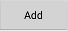
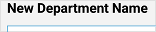
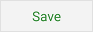

Adding Departments
 Pressing
the "Add" button under the "Department" submenu while in the
Settings view opens the "Add a New Department" dialog.
 Every
department must have its own individual name; duplicate names are
not permitted. Names should contain only uppercase or
lowercase letters, numbers and spaces. You do not have to
limit yourself to names of departments found within your store; you
may want to consider adding a store name to the department list
instead. If for example you do most of your grocery shopping
at Kroger but, purchase just a few items at Whole Foods, then add
Whole Foods as a department for the few items you purchase at that
store while keeping the regular department names for the items you
purchase at Kroger.
 The "Save"
button stores the new department at the bottom of the ordered
department list, then returns you to the Settings menu.
 Pressing the
"Cancel" button returns you to the Settings menu without applying
any changes.
Pressing the
"Cancel" button returns you to the Settings menu without applying
any changes.